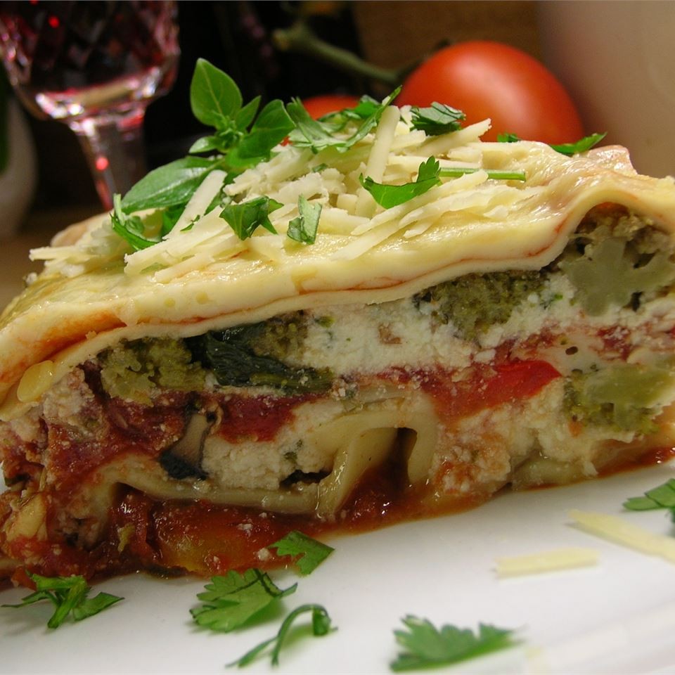

This delicious recipe is a somewhat healthier take on lasagna, using various vegetables and spices to give it its rich taste. If you want a perfect dish for a gathering, this lasagna is the way to go as it yields 12 servings. If you have picky eaters, this recipe will be perfect to have them consume their vegetables while still tasting delicious.
Make sure to set aside a good amount of time out of your day to prepare this meal because it does take some time. Alott 25 minutes for prep, 1 hour for cooking, and an additional 15 minutes for a total of 1 hour and 40 minutes